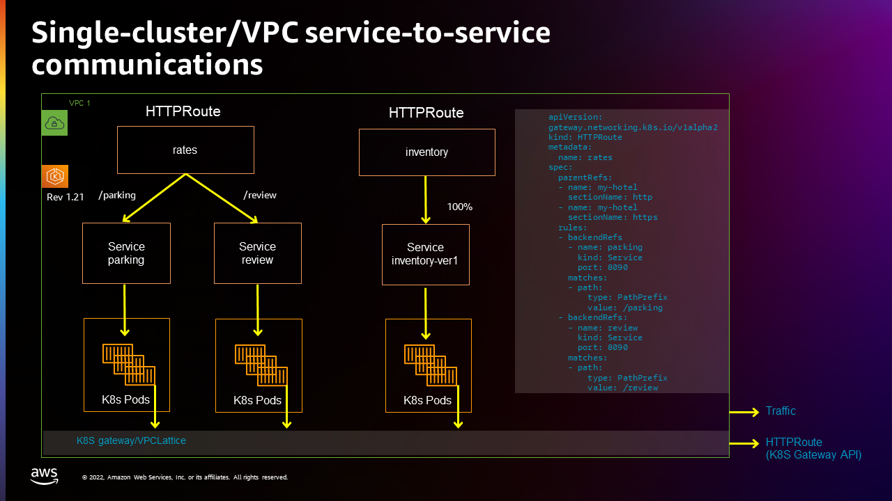
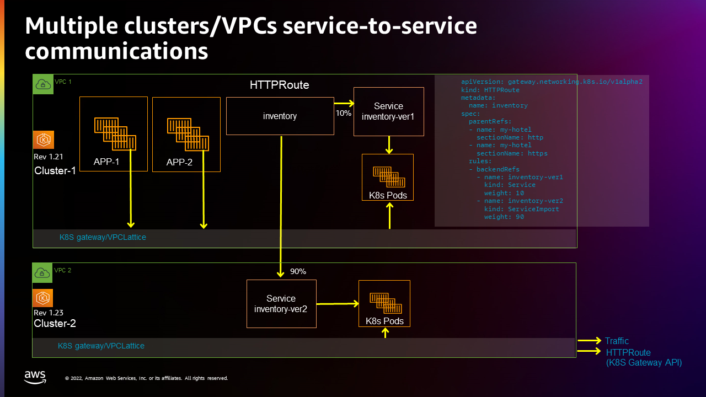

Getting Started with AWS Gateway API Controller¶
This guide helps you get started using the controller.
Following this guide, you will:
- Set up service-to-service communications with VPC Lattice on a single cluster.
- Create another service on a second cluster in a different VPC, and route traffic to that service across the two clusters and VPCs.
Using these examples as a foundation, see the Concepts section for ways to further configure service-to-service communications.
Prerequisites¶
Before proceeding to the next sections, you need to:
- Create a cluster
gw-api-controller-demowith the controller following the AWS Gateway API Controller installation guide on Amazon EKS. -
Clone the AWS Gateway API Controller repository.
- Install Gateway API CRDs. The latest Gateway API CRDs are available here. Please follow this installation process. - Set the AWS Region of your cluster.
Single cluster¶
This example creates a single cluster in a single VPC, then configures two HTTPRoutes (rates and inventory) and three kubetnetes services (parking, review, and inventory-1). The following figure illustrates this setup:

Setup in-cluster service-to-service communications
-
AWS Gateway API Controller needs a VPC Lattice service network to operate.
If you installed the controller with
helm, you can update chart configurations by specifying thedefaultServiceNetworkvariable:You can use AWS CLI to manually create a VPC Lattice service network association to the previously created
my-hotelservice network:Ensure the service network created above is ready to accept traffic from the new VPC, by checking if the VPC association status is
ACTIVE: -
Create the Kubernetes Gateway
my-hotel:Verify that
my-hotelGateway is created withPROGRAMMEDstatus equals toTrue: -
Create the Kubernetes HTTPRoute
ratesthat can has path matches routing to theparkingservice andreviewservice: - Create another Kubernetes HTTPRoute
inventory: -
Find out HTTPRoute's DNS name from HTTPRoute status:
-
Check VPC Lattice generated DNS address for HTTPRoute
inventoryandrates(this could take up to one minute to populate): -
If the previous step returns the expected response, store VPC Lattice assigned DNS names to variables.
Confirm that the URLs are stored correctly:
Verify service-to-service communications
-
Check connectivity from the
inventory-ver1service toparkingandreviewservices: -
Check connectivity from the
Now you could confirm the service-to-service communications within one cluster is working as expected.parkingservice to theinventory-ver1service:
Multi-cluster¶
This section builds on the previous one. We will be migrating the Kubernetes inventory service from a the EKS cluster we previously created to new cluster in a different VPC, located in the same AWS Account.

Set up inventory-ver2 service and serviceExport in the second cluster
Warning
VPC Lattice is a regional service, so you will need to create this second cluster in the same AWS Region as gw-api-controller-demo. Keep this in mind when setting AWS_REGION variable in the following steps.
-
Create a second Kubernetes cluster
gw-api-controller-demo-2with the Controller installed (using the same instructions to create and install the controller on Amazon EKS used to create the first). -
For sake of simplicity, lets set some alias for our clusters in the Kubernetes config file.
-
Ensure you're using the second cluster's
If your context is set to the first cluster, switch it to use the second cluster one:kubectlcontext. -
Create the service network association.
If you installed the controller with
helm, you can update chart configurations by specifying thedefaultServiceNetworkvariable:You can use AWS CLI to manually create a VPC Lattice service network association to the previously created
my-hotelservice network:Ensure the service network created above is ready to accept traffic from the new VPC, by checking if the VPC association status is
ACTIVE: -
Create the Kubernetes Gateway
my-hotel:Verify that
my-hotelGateway is created withPROGRAMMEDstatus equals toTrue: -
Create a Kubernetes inventory-ver2 service in the second cluster:
- Export this Kubernetes inventory-ver2 from the second cluster, so that it can be referenced by HTTPRoute in the first cluster:
Configuring Health Checks for Multi-Cluster Services (Optional)¶
When deploying services across multiple clusters, you can ensure consistent health check configuration by applying a TargetGroupPolicy to your ServiceExport. This ensures that all target groups created for the service across different clusters use the same health check settings.
For example, to configure custom health checks for the inventory-ver2 service:
apiVersion: application-networking.k8s.aws/v1alpha1
kind: TargetGroupPolicy
metadata:
name: inventory-health-policy
spec:
targetRef:
group: "application-networking.k8s.aws"
kind: ServiceExport
name: inventory-ver2
healthCheck:
enabled: true
intervalSeconds: 10
timeoutSeconds: 5
healthyThresholdCount: 2
unhealthyThresholdCount: 3
path: "/health"
port: 80
protocol: HTTP
protocolVersion: HTTP1
statusMatch: "200-299"
Apply this policy in the same cluster where the ServiceExport is created:
kubectl apply -f - <<EOF
apiVersion: application-networking.k8s.aws/v1alpha1
kind: TargetGroupPolicy
metadata:
name: inventory-health-policy
spec:
targetRef:
group: "application-networking.k8s.aws"
kind: ServiceExport
name: inventory-ver2
healthCheck:
enabled: true
intervalSeconds: 10
timeoutSeconds: 5
healthyThresholdCount: 2
unhealthyThresholdCount: 3
path: "/health"
port: 80
protocol: HTTP
protocolVersion: HTTP1
statusMatch: "200-299"
EOF
This configuration will be automatically applied to all target groups for the inventory-ver2 service across all clusters in your multi-cluster deployment.
Switch back to the first cluster
- Switch context back to the first cluster
- Create Kubernetes service import
inventory-ver2in the first cluster: - Update the HTTPRoute
inventoryrules to route 10% traffic to the first cluster and 90% traffic to the second cluster: -
Check the service-to-service connectivity from
parking(in the first cluster) toinventory-ver1(in in the first cluster) andinventory-ver2(in in the second cluster):inventoryFQDN=$(kubectl get httproute inventory -o json | jq -r '.metadata.annotations."application-networking.k8s.aws/lattice-assigned-domain-name"') kubectl exec deploy/parking -- sh -c 'for ((i=1; i<=30; i++)); do curl -s "$0"; done' "$inventoryFQDN"Requesting to Pod(inventory-ver2-6dc74b45d8-rlnlt): Inventory-ver2 handler pod <----> in 2nd cluster Requesting to Pod(inventory-ver2-6dc74b45d8-rlnlt): Inventory-ver2 handler pod Requesting to Pod(inventory-ver2-6dc74b45d8-rlnlt): Inventory-ver2 handler pod Requesting to Pod(inventory-ver2-6dc74b45d8-rlnlt): Inventory-ver2 handler pod Requesting to Pod(inventory-ver2-6dc74b45d8-95rsr): Inventory-ver1 handler pod <----> in 1st cluster Requesting to Pod(inventory-ver2-6dc74b45d8-rlnlt): Inventory-ver2 handler pod Requesting to Pod(inventory-ver2-6dc74b45d8-95rsr): Inventory-ver2 handler pod Requesting to Pod(inventory-ver2-6dc74b45d8-95rsr): Inventory-ver2 handler pod Requesting to Pod(inventory-ver1-74fc59977-wg8br): Inventory-ver1 handler pod....You can see that the traffic is distributed between
inventory-ver1andinventory-ver2as expected.
Cleanup¶
To avoid additional charges, remove the demo infrastructure from your AWS account.
Multi-cluster
Delete resources in the Multi-cluster walkthrough.
-
Cleanup VPC Lattice service and service import in
gw-api-controller-democluster: -
Delete service export and applications in
gw-api-controller-demo-2cluster: -
Delete the service network association (this could take up to one minute):
CLUSTER_NAME=gw-api-controller-demo-2 CLUSTER_VPC_ID=$(aws eks describe-cluster --name $CLUSTER_NAME | jq -r .cluster.resourcesVpcConfig.vpcId) SERVICE_NETWORK_ASSOCIATION_IDENTIFIER=$(aws vpc-lattice list-service-network-vpc-associations --vpc-id $CLUSTER_VPC_ID --query "items[?serviceNetworkName=="\'my-hotel\'"].id" | jq -r '.[]') aws vpc-lattice delete-service-network-vpc-association --service-network-vpc-association-identifier $SERVICE_NETWORK_ASSOCIATION_IDENTIFIER
Single cluster
Delete resources in the Single cluster walkthrough.
-
Delete VPC Lattice services and applications in
gw-api-controller-democluster:kubectl config use-context gw-api-controller-demo kubectl delete -f files/examples/inventory-route.yaml kubectl delete -f files/examples/inventory-ver1.yaml kubectl delete -f files/examples/rate-route-path.yaml kubectl delete -f files/examples/parking.yaml kubectl delete -f files/examples/review.yaml kubectl delete -f files/examples/my-hotel-gateway.yaml -
Delete the service network association (this could take up to one minute):
CLUSTER_NAME=gw-api-controller-demo CLUSTER_VPC_ID=$(aws eks describe-cluster --name $CLUSTER_NAME | jq -r .cluster.resourcesVpcConfig.vpcId) SERVICE_NETWORK_ASSOCIATION_IDENTIFIER=$(aws vpc-lattice list-service-network-vpc-associations --vpc-id $CLUSTER_VPC_ID --query "items[?serviceNetworkName=="\'my-hotel\'"].id" | jq -r '.[]') aws vpc-lattice delete-service-network-vpc-association --service-network-vpc-association-identifier $SERVICE_NETWORK_ASSOCIATION_IDENTIFIER
Cleanup VPC Lattice Resources
-
Cleanup controllers in
gw-api-controller-demoandgw-api-controller-demo-2clusters:kubectl config use-context gw-api-controller-demo CLUSTER_NAME=gw-api-controller-demo aws ecr-public get-login-password --region us-east-1 | helm registry login --username AWS --password-stdin public.ecr.aws helm uninstall gateway-api-controller --namespace aws-application-networking-system kubectl config use-context gw-api-controller-demo-2 CLUSTER_NAME=gw-api-controller-demo-2 aws ecr-public get-login-password --region us-east-1 | helm registry login --username AWS --password-stdin public.ecr.aws helm uninstall gateway-api-controller --namespace aws-application-networking-systemkubectl config use-context gw-api-controller-demo kubectl delete -f https://raw.githubusercontent.com/aws/aws-application-networking-k8s/main/files/controller-installation/deploy-v1.1.4.yaml kubectl config use-context gw-api-controller-demo-2 kubectl delete -f https://raw.githubusercontent.com/aws/aws-application-networking-k8s/main/files/controller-installation/deploy-v1.1.4.yaml -
Delete the service network:
- Ensure the service network associations have been deleted (do not move forward if the deletion is still
IN PROGRESS): - Delete
my-hotelservice network: - Ensure the service network
my-hotelis deleted:
- Ensure the service network associations have been deleted (do not move forward if the deletion is still
Cleanup the clusters
Finally, remember to delete the clusters you created for this walkthrough:
-
Delete
gw-api-controller-democluster: -
Delete
gw-api-controller-demo-2cluster: